ACCT 5105-01 - Financial Reporting & Assurance in a Blockchain World
Start here — no finance or blockchain required
You do not need a finance degree. You do not need to have owned a coin. If a word feels like spy-movie English, this page is the plain version.
Read it before class, or the night you get lost. About 20 minutes. Then open the matching notebook and type with the projector.
The longer review copy is the concept handbook. Class still runs in the notebook: run every Demo, then fill YOUR TURN.
The whole course in six sentences
- A community needs a money: something that can pay, sit, and price.
- Money is always a list of who has what. A payment is two updates, not one.
- A hash is a fingerprint. A signature is “I approved this.” An address is a locker number. A seed is the house key — never on a slide.
- A chain is a notebook where every page names the last page’s fingerprint, and someone had to pass a small puzzle to publish a page.
- “I have the coin” can mean three different objects: you hold it, a fund holds it, or a company owes you.
- Later you issue a testnet class coin, circulate it, and say what an assurer can stand behind. Play money only.
CLASSUSD = class dollars, the yardstick the instructor issues.
EAGE = Eagecoin, the running example of your team coin.
Testnet = play chain. Mainnet = real cash. We never go there.
Easy words (read once)
If a later page uses a short label, this is the long name.
| If I say | I mean |
|---|---|
| Punch | One meal credit on a cafeteria card. Not a fist. |
| Pay job | Spend now. Fancy name: medium of exchange. |
| Sit job | Save for later. Fancy name: store of value. |
| Price job | The yardstick on the tag (“a slice = 2 punches”). Fancy name: unit of account. |
| Ledger | A list of who has what. |
| Hash | Fingerprint / tamper sticker. Anyone can still read the bag. |
| Signature | “I approved this.” Not a secret code. |
| Address | Public locker number (0x…). Safe on the roster. |
| Seed | House key. A sentence of words. Never a screenshot. |
| Nonce | Guess counter. Not “nonsense.” |
| Mine | Guess until the fingerprint looks rare. Not a coal mine. |
| Block | A page in the notebook. Not a city block. |
| Proof of work | A gym beep-test: you prove you did guesses, not that you are nice. |
| Index | A playlist of coins. Not a textbook index. |
| Beta | A dance partner in the data. Not a seatbelt. Not a software version. |
| Airdrop | A gift of coins. Not rain. |
| ETF | Exchange-traded fund: you own a share of a company that holds seats. |
| Tab / IOU | “I owe you.” The company may owe you the coin. |
1. What is money? (Session 1)
Picture
A cafeteria stops taking dollars at lunch. Each table gets a punch card. Each punch is one meal the kitchen still owes you.
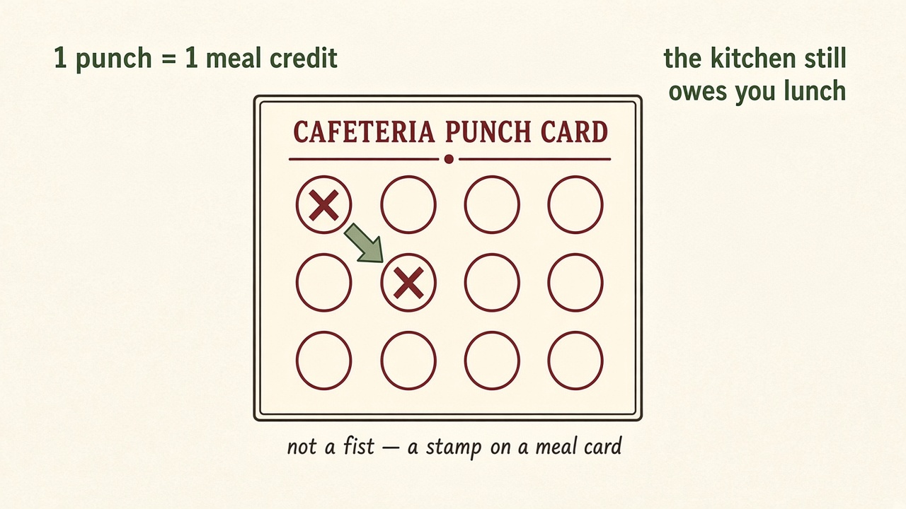
Three jobs, one card
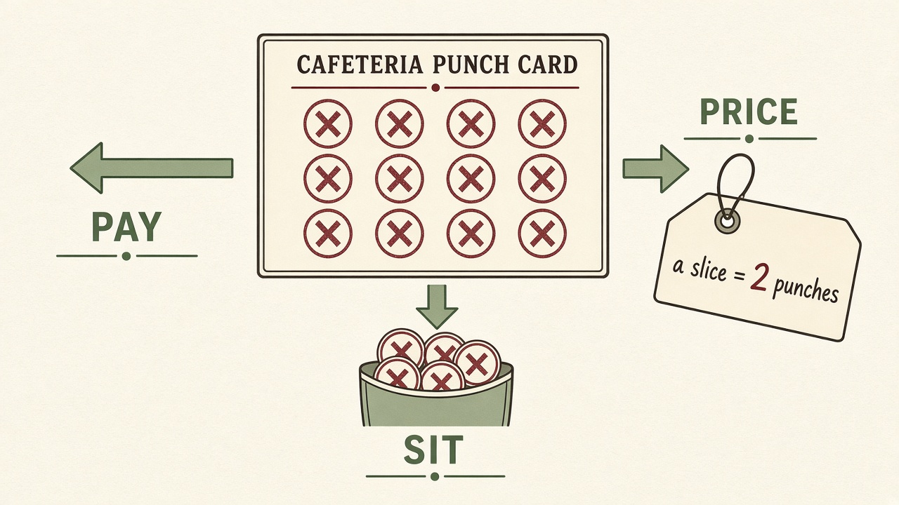
| Job | What it does | Cafeteria |
|---|---|---|
| Pay | The thing that actually moves when you buy | Punch becomes pizza |
| Sit | The thing you keep for later | Save punches for Friday |
| Price | The yardstick on the tag | “A slice = 2 punches” |
Digital is only the rail (how it is recorded). A PDF gift card is digital. It is still the store’s I Owe You.
Worked example. Punches expire at 2 p.m. You can still buy pizza until then (pay still works). You cannot keep leftover credits overnight. Sit died.
Mix-up. “It is on a blockchain, so it is money.” Name pay, sit, or price first. If you cannot point to a job, you have a sticker.
Check. A concert ticket gets you in the door. Is it a good everyday money?
Answer. No. Fine as a door. Bad as a currency: it does not sit, and it is not a yardstick.
2. A payment is two updates (Session 1)
Picture
The cafeteria clipboard:
| Who | Punches |
|---|---|
| Ava | 10 |
| Ben | 10 |
| Kitchen | 0 |
Ava buys pizza for 2 punches.
- Check Ava has at least 2.
- Ava: 10 → 8.
- Kitchen: 0 → 2.
If you forget step 3, two punches vanish. That is a burn, not a payment.
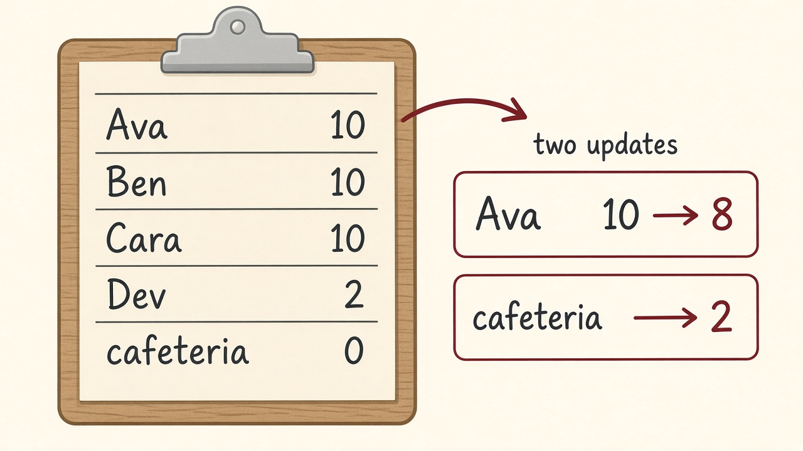
Venmo, a bank app, Bitcoin, and EAGE all do this two-sided update. The difference is who is allowed to update the list (the referee).
Worked example — velocity. 30 punches exist. This week only 3 moved. Velocity = 3 ÷ 30 = 0.10. The club looks rich and acts frozen. If nobody spends EAGE, you built a collectible.
Worked example — asset and promise. The same punch is treasure in Ava’s pocket (an asset) and a pizza the kitchen still owes (a liability / I Owe You). If the cafeteria closes, the card is a pretty piece of paper.
Check. Why did the 1970s babysitting co-op feel poor even though parents and kids were still there?
Answer. Too few paper slips (scrip). Families hoarded the last one. Nobody sat. That is a pay-job failure, not a people failure.
3. Hash, signature, address, seed (Session 2)
Hash = fingerprint, not a lock
You put jackets in a bag and stick a fingerprint on the outside. Move one sock → new print, not “almost the same.” Anyone can still open the bag and look. That is not encryption.
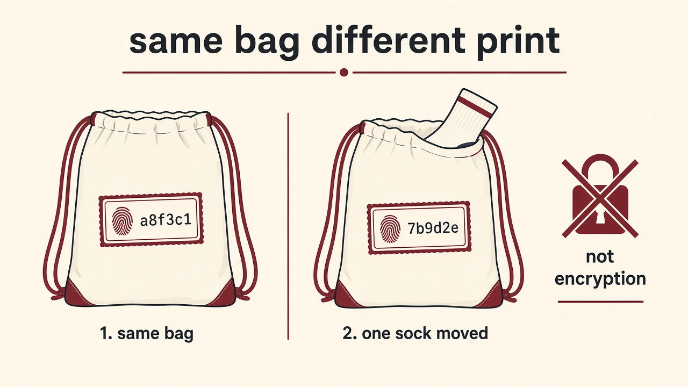
Worked example. Page says Ava→Ben:2. You change it to Ava→Ben:200. The hash is a new sticker.
Signature = I approved this
Ava’s key is the only thing that can approve Ava’s spend. The class can check the signature without seeing the key. Checking is not the same as forging.
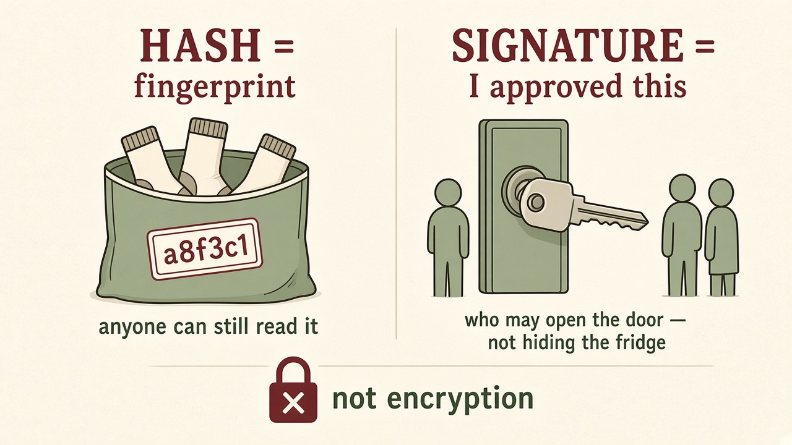
Mix-up. “A signature hides the balance.” No. It authorizes a line.
Address vs seed
| Word | Picture | Public? |
|---|---|---|
| Address | Locker number | Yes. Put it on the roster. |
| Seed | House key (a sentence of words) | Never. Not a PDF, not a chat, not a screenshot. |
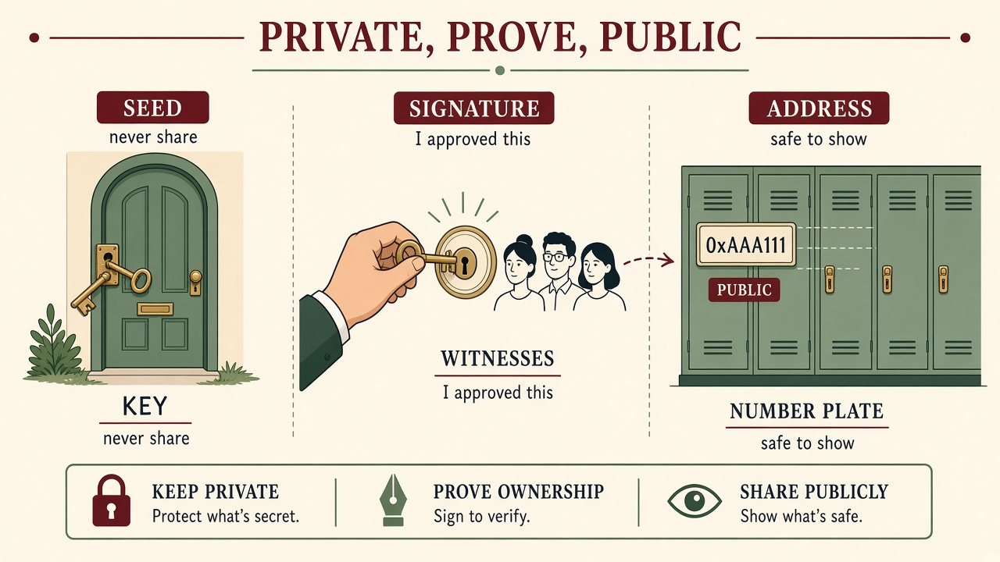
If a seed appears on a laptop in this room, we stop the class.
Check. You see “2 CLASSUSD” in a wallet app and “2 CLASSUSD” in an exchange app. Same thing?
Answer. No. The wallet (if you hold the seed) is the thing. The exchange number is often a tab — the company may owe you.
4. A tiny chain, then we break it (Session 3)
A block is a page
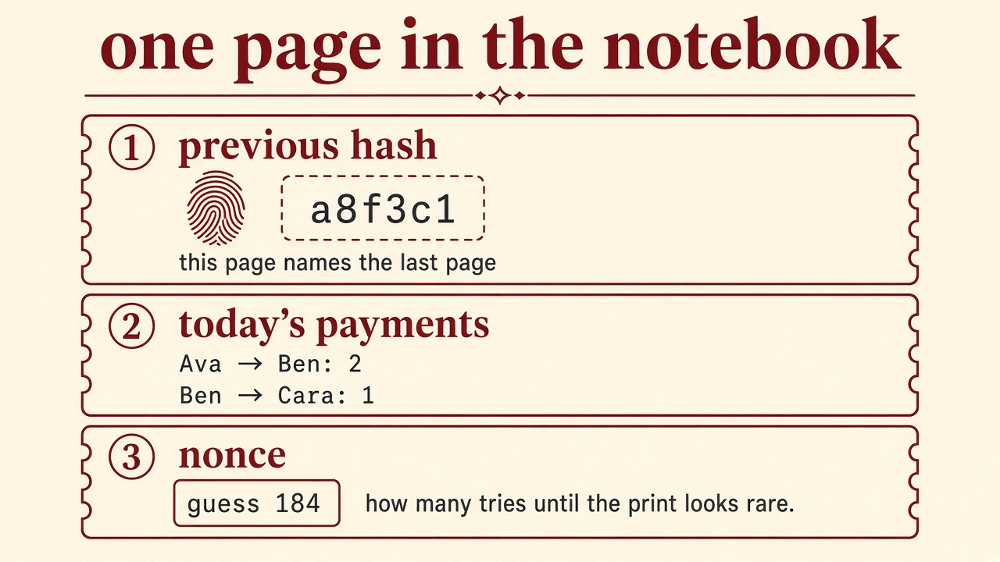
| Part | Job |
|---|---|
| Previous hash | This page names the last page’s fingerprint |
| Today’s payments | The lines an assurer would read |
| Nonce | How many guesses until the fingerprint looks rare |
Difficulty 3 in this class = the hash must start with three zeros. Stay there. Difficulty 5 will eat the hour.
Proof of work is a beep-test
You prove you did guesses. Not that you are nice. Mining does not hide the payments.
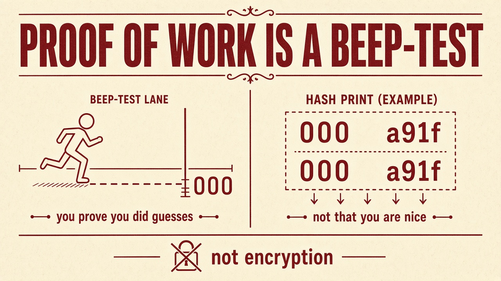
Each page names the last sticker
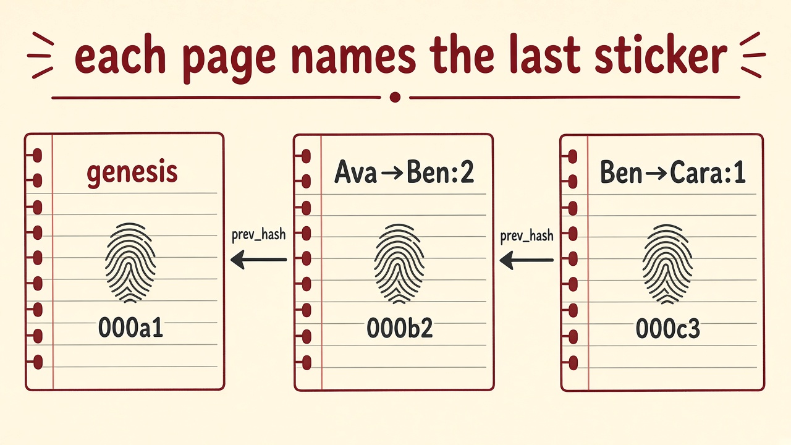
Swap a jacket in locker 3 → lockers 4–8 still point at the old codes.
Verify asks two questions, both:
- Do the zeros still start the hash? (the puzzle was done)
- Does this page name the real last page?
Quiet edit, do not re-mine
Change Ava’s 2 to 200 and leave the old nonce sitting there.
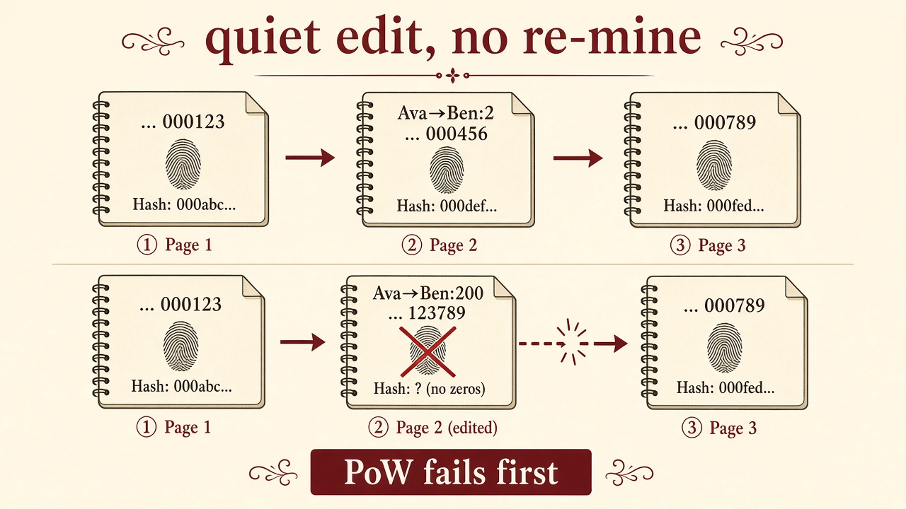
Answer we want. Proof of work fails first (new hash has no zeros). Later, page 3 still points at the old fingerprint of page 2.
Mix-up. “We should launch our own Bitcoin so Eagecoin is secure.” No. EAGE sits on someone else’s testnet. You inherit their referees. You still owe a mint / pause / lost-key plan.
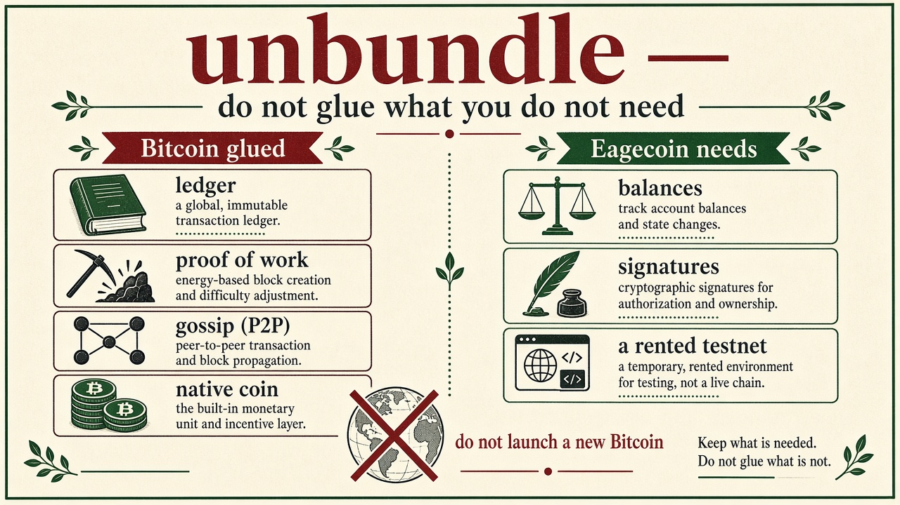
Bitcoin glued: a ledger + proof of work + gossip + a native coin.
EAGE needs: balances + signatures + a rented testnet.
Check. One confirmation on a testnet — is that as final as Fedwire?
Answer. No. Pretty sure ≠ “the Fed said so.” Also check: wrong network, pause, fake token with the same nickname.
5. Price, playlist, packages (Session 4)
Price is right now
Price = how many CLASSUSD per coin this minute. It is a tag, not a promise about Friday.
Index is a playlist. Beta is a dance partner.
If the playlist jumps 1% and your coin tended to jump 2% in this tiny sample, β ≈ 2. That is a habit in the data. It is not a seatbelt.
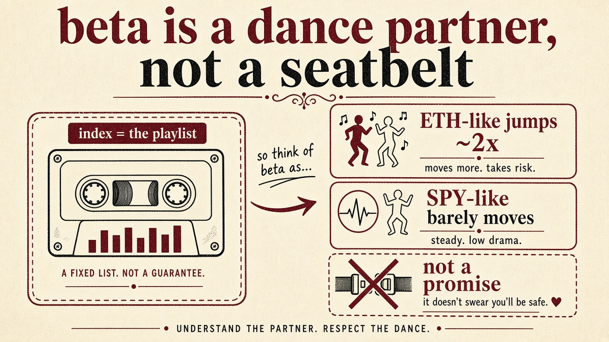
Mix-up. “High beta means a good investment.” It means a wild dance partner.
Same concert, three tickets
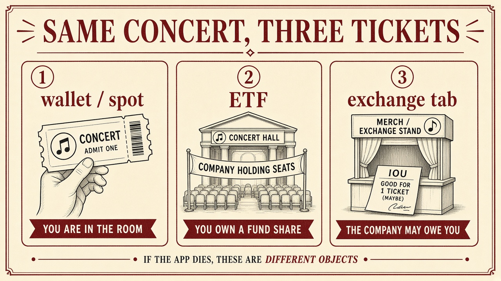
| Package | What you hold if the app dies |
|---|---|
| Wallet / spot | The thing — if you still have the seed |
| ETF | A fund share + a prospectus |
| Exchange tab | A customer-in-line story. Often an I Owe You |
Mix-up. “Listed on an exchange, so I hold the coin.” Often you hold a tab.
How people get coins
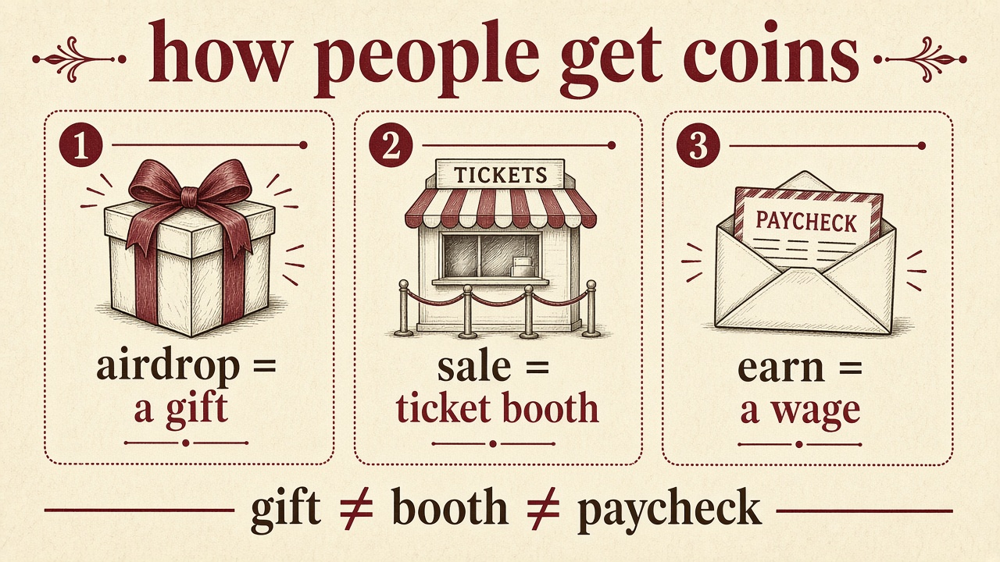
Gift ≠ booth ≠ paycheck. Selling EAGE for CLASSUSD plus a 10× pitch is how you wander into later “does this look like a security?” facts.
Check. Would a classmate hold your coin overnight?
Answer. If no, it is a sticker. Give a use reason (they can pay for a defined thing, or sit until Friday), not hope (“number go up”).
6. Later modules, in cafeteria English
You do not need these tonight. When they arrive, this is the picture.
| Module | Picture | One line |
|---|---|---|
| 3 | A soda machine with posted rules | A smart contract is if-then on a shared counter. The contract address is the printer’s serial number. The ticker is a nickname. |
| 4 | A lemonade bowl | Payments: unit (how you think the price) vs rail (the pipe). The bowl is an automated market: x \times y = k. |
| 5 | Coat check | A claim is the coat. A receipt is the stub. Netting erases a triangle of I Owe Yous. |
| 6 | Gift card that used to say $1 | A peg is the poster price. A run is everyone redeeming at once. Write kill rules with numbers. |
| 7 | Demo day | Prove it live, then say go / partner / pass. |
7. How to use class
- Before Monday: Jupyter (Module 1), a wallet address (never a seed), Remix before Module 3.
- In the room: I run every green Demo. You type
???in the student notebook from Canvas. - If a word will not land: this page, then the handbook session, then re-run the Demo. Do not start with Twitter.
- Quizzes are closed notes on Canvas. This site has no quiz questions and no solutions.
- Hard rule. Testnet only. No mainnet, no real money, no public sale. Never put a seed in a PDF.
8. If you are lost
| Feeling | Open |
|---|---|
| “I still don’t know what money is.” | Section 1 on this page |
| “What is a payment?” | Section 2 — two updates |
| “Wallets feel like spy movies.” | Section 3 — locker vs house key |
| “Why did we mine anything?” | Section 4 — beep-test + unbundle |
| “Price vs index vs beta is soup.” | Section 5 |
| “Would anyone hold our coin overnight?” | Section 5, last check |
| Missed a whole Monday | Handbook for that session, then the notebook |
You understand it when you can explain it with a cafeteria, a house key, or a lemonade bowl. If you can only say “decentralized” or “web3,” you do not understand it yet.